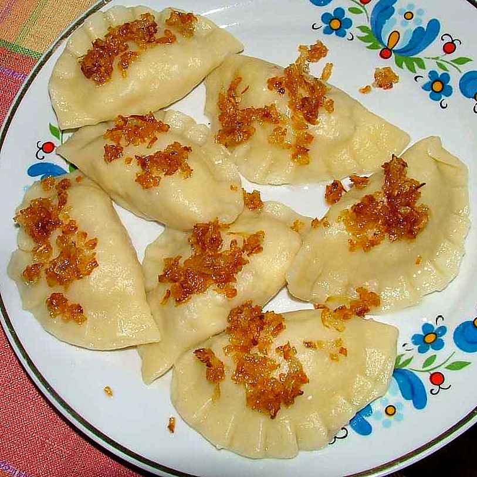

Pierogi

A favorite polish dish
Pierogis are good because they are cheap and taste good.
Ingredients
- Flour
- Water
- Potatoes
- Cottage cheese
- Cooking oil
- Green part of onion
- Egg
Steps
- Make a mound of flour
- Make a hole inside it and add the egg and a little water
- Knead the dough
- Slowly add water and knead until the dough is flexible
- Roll the dough out and cut circles from dough
- Mix potatoes without skin with cottage cheese and salt to make the filling
- Place the filling inside dough circles and seal the dough with your fingers
- Cook in boiling water